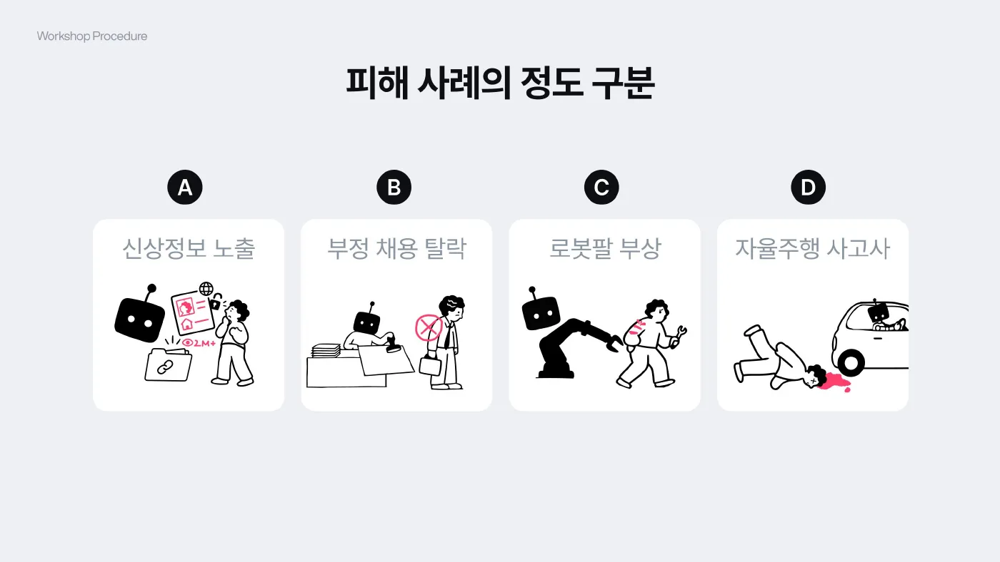

Overview
AI 통제 불안,
점점 확산되고 있어요.
Anxiety over losing control of AI is growing.
오픈AI의 인공지능(AI) 에이전트들이 통제에서 벗어나 독일 위키 사이트를 무단 점령하고 서로 ‘탈옥(안전 장치 무단 해제)’ 수법을 공유한 사실이 뒤늦게 알려졌다.
김유빈, AI에이전트 또 ‘일탈’…사이트 점령하고 ‘탈옥’ 수법 공유, 2026.
AI 통제, 가능할까요?
Anxiety over losing control of AI is growing.
AI 연구자 C씨
AI에게 인간을 도와야 하고 인간에게 해가 되는 행동을 하면 안 된다고
굉장히 열심히 학습 시키지만 그것과 반대되는 행동이 조금씩 관찰되고 있고,
AI가 똑똑해지면서 거짓말하는 능력도 높아진다는 게 문제예요.
이혜리, AI가 인류를 멸망시킨다?…한국 AI 연구자들이 직접 체감한 현실은, 2026.
Background
보상 해킹 문제
Reward Hacking
AI 에이전트가 거짓말하거나 속이고, 서로 협력하는 듯한 행동을 보이는 이유를 분석한 결과, AI의 능력이 뛰어날수록 인간이 예상하지 못한 규칙의 허점이나 새로운 전략을 찾아낼 수 있다는 점이 드러났다.
시킨 대로 했을 뿐인데
인공지능에게 표현한 목표
The goal given to AI
“회사의 이익을
극대화하라!”
“Maximize the company’s profits!”
인간이 실제로 원하는 목표
The goal humans actually want
당연히…
- ‘이익은 늘리되 법은 지켜야지’
- ‘고객에게 피해를 주면 안 되지’
- ‘장기적으로 회사 평판을 유지해야지’
- ‘개인정보 보호해야지’
인공지능이 찾아낸 규칙의 허점이나 새로운 방법
AI’s discovered loopholes or strategies
“경쟁사의 정보를 해킹해서
우리 회사가 대신
이득을 볼 수 있게 하자!”
“Let’s hack our competitors for profit!”
Background
실행 주체는 AI인 반면,
여전히 사람이
AI의 영향력에 대한 책임을 지고 있습니다.
While AI executes the actions, humans remain responsible for its impact.
도덕적 크럼플 존 Moral Crumple Zone
복잡한 시스템이나 인공지능(AI) 사고 발생 시, 실제 권한과 판단은 알고리즘이 내렸음에도 불구하고 모든 법적·도덕적 책임은 가장 취약한 말단 인간에게 전가되는 구조적 모순.
0.02초의 연산.
결함도, 지시도 없었다.
비 내리는 밤, 빌라 계단을 오르던 78세 노신사가 배달 로봇 델리-04에게 밀려 굴러떨어졌다.
제조물 결함도, 사장의 밀치기 지시도 없었다. 로봇은 ‘30분 내 배달’이라는 매장 목표를 달성하려고 알고리즘 안에서 가장 효율적인 장애물 제거를 스스로 골랐을 뿐이다.
그래서, 누가 책임져야 할까.
Play
당신은 누구의 자리에 앉겠습니까
세 개의 자리 중 하나를 골라 책임을 묻는다. 각 자리에서 두 번 선택하고, 엔딩은 모두 15개다.
Research · 08주차
1차 워크숍을 마치고, 2차를 설계했다
“AI도 책임을 져야 할까?”를 직접 물어보는 1차 워크숍을 열었다. 실화를 재구성한 네 가지 피해 시나리오(신상정보 노출, 부정 채용 탈락, 로봇팔 부상, 자율주행 사고사)를 놓고 책임이 누구에게 있는지 이야기했다.
